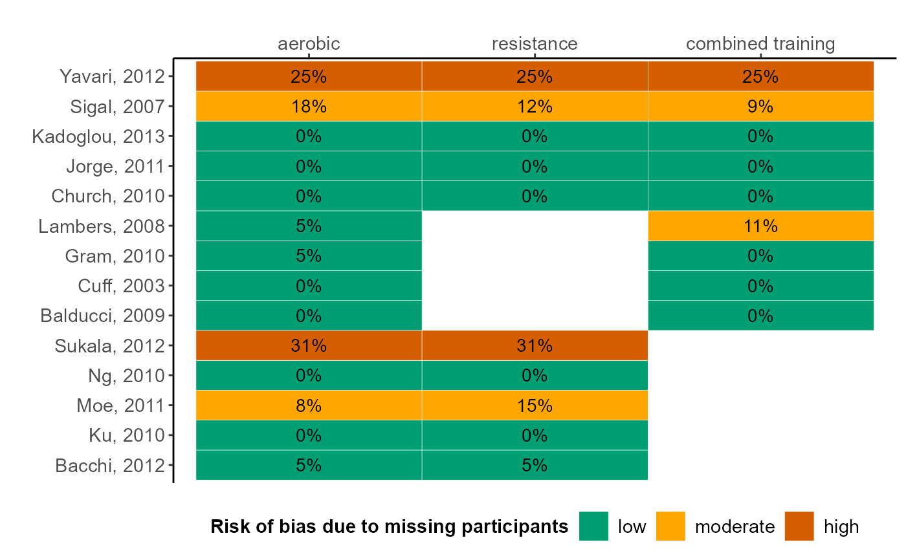

R/heatmap.missing.dataset_function.R
heatmap_missing_dataset.RdIllustrates the proportion of missing participants and the associated risk of bias in each arm of every trial in the dataset.
heatmap_missing_dataset(data, trial_names, drug_names)A data-frame of a one-trial-per-row format containing arm-level
data of each trial. See 'Format' in run_model.
A vector of labels with the name of the trials in the
order they appear in the argument data. If trial_names is not
defined, the order of the trials as they appear in data is used,
instead.
A vector of labels with the name of the interventions in
the order they appear in the argument data. If drug_names is
not defined, the order of the interventions as they appear in data
is used, instead.
A heatmap presenting the proportion of missing participants in each trial-arm of the dataset. The columns and the rows of the heatmap correspond to the interventions and trials, respectively. The 'five-and-twenty' rule of Sackett and colleagues (1997) is used to characterise the proportion of missing participants as being associated with low (up to 5%), moderate (more than 5% and up to 20%), and high risk of bias (more than 20%). Low, moderate, and high risk of bias due to missing participants are indicated using green, orange, and red colour, respectively. The function is also applicable for a pairwise meta-analysis.
Sackett DL, Richardson WS, Rosenberg WM, Haynes RB. Evidence-based medicine: how to practice and teach EBM. New York: Churchill Livingstone 1997. ISBN: 0-443-05686-2.
data("nma.schwingshackl2014")
# Return the first six trials of the dataset
head(nma.schwingshackl2014)
#> study t1 t2 t3 y1 y2 y3 sd1 sd2 sd3 m1 m2 m3 n1 n2 n3
#> 1 Bacchi, 2012 1 2 NA -0.40 -0.35 NA 0.44 0.48 NA 1 1 NA 20 20 NA
#> 2 Ku, 2010 1 2 NA -0.60 -0.30 NA 1.20 0.90 NA 0 0 NA 15 13 NA
#> 3 Moe, 2011 1 2 NA -0.53 -0.35 NA 0.45 0.40 NA 1 2 NA 13 13 NA
#> 4 Ng, 2010 1 2 NA -0.30 -0.40 NA 0.88 0.60 NA 0 0 NA 30 30 NA
#> 5 Sukala, 2012 1 2 NA -0.10 -0.10 NA 0.51 0.93 NA 4 4 NA 13 13 NA
#> 6 Balducci, 2009 1 3 NA 6.34 6.65 NA 0.94 1.08 NA 0 0 NA 20 22 NA
# The names of the interventions in the order they appear in the dataset
interv_names <- c("aerobic", "resistance", "combined training")
# Create the heatmap
heatmap_missing_dataset(data = nma.schwingshackl2014,
trial_names = nma.schwingshackl2014$study,
drug_names = interv_names)
